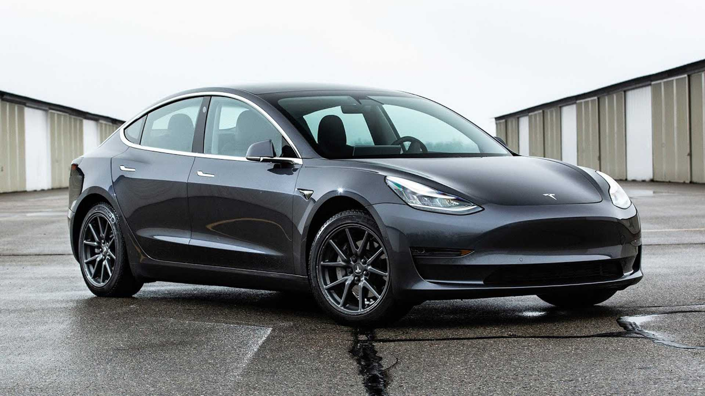
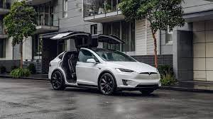
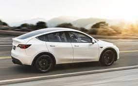
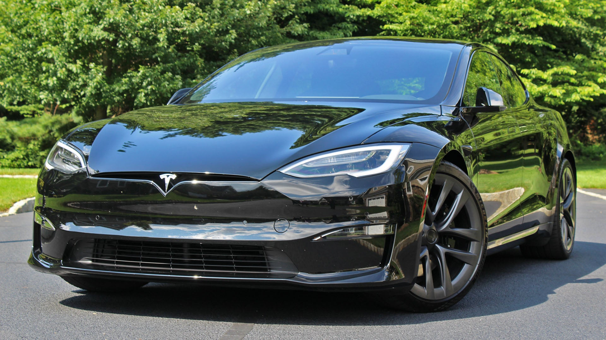

Tesla model 3
esla diseñó el Model 3 desde cero como vehículo eléctrico utilizando en todo momento la integración a nivel de sistema. Todos los componentes, incluidas las baterías, los motores e incluso la aerodinámica exterior, están optimizados para beneficiarse unos de otros y crear uno de los vehículos más eficientes e increíblemente potentes jamás construidos. *Con el primer pie de desplazamiento restado.
Tesla model X
Tesla diseñó el Model X desde cero como vehículo eléctrico. Todos los componentes, incluidas las baterías, los motores y la aerodinámica exterior, están optimizados para beneficiarse unos de otros y crear uno de los vehículos más eficientes e increíblemente potentes jamás construidos. *Con el primer pie de desplazamiento restado.
Tesla model Y
Tesla diseñó el Model Y desde cero como vehículo eléctrico utilizando en todo momento la integración a nivel de sistema. Todos los componentes, incluidas las baterías, los motores e incluso la aerodinámica exterior, están optimizados para beneficiarse unos de otros y crear uno de los vehículos más eficientes e increíblemente potentes jamás construidos. *Con el primer pie de desplazamiento restado.
Tesla model S Plaid
Tesla diseñó el Model Y desde cero como vehículo eléctrico utilizando en todo momento la integración a nivel de sistema. Todos los componentes, incluidas las baterías, los motores e incluso la aerodinámica exterior, están optimizados para beneficiarse unos de otros y crear uno de los vehículos más eficientes e increíblemente potentes jamás construidos. *Con el primer pie de desplazamiento restado.